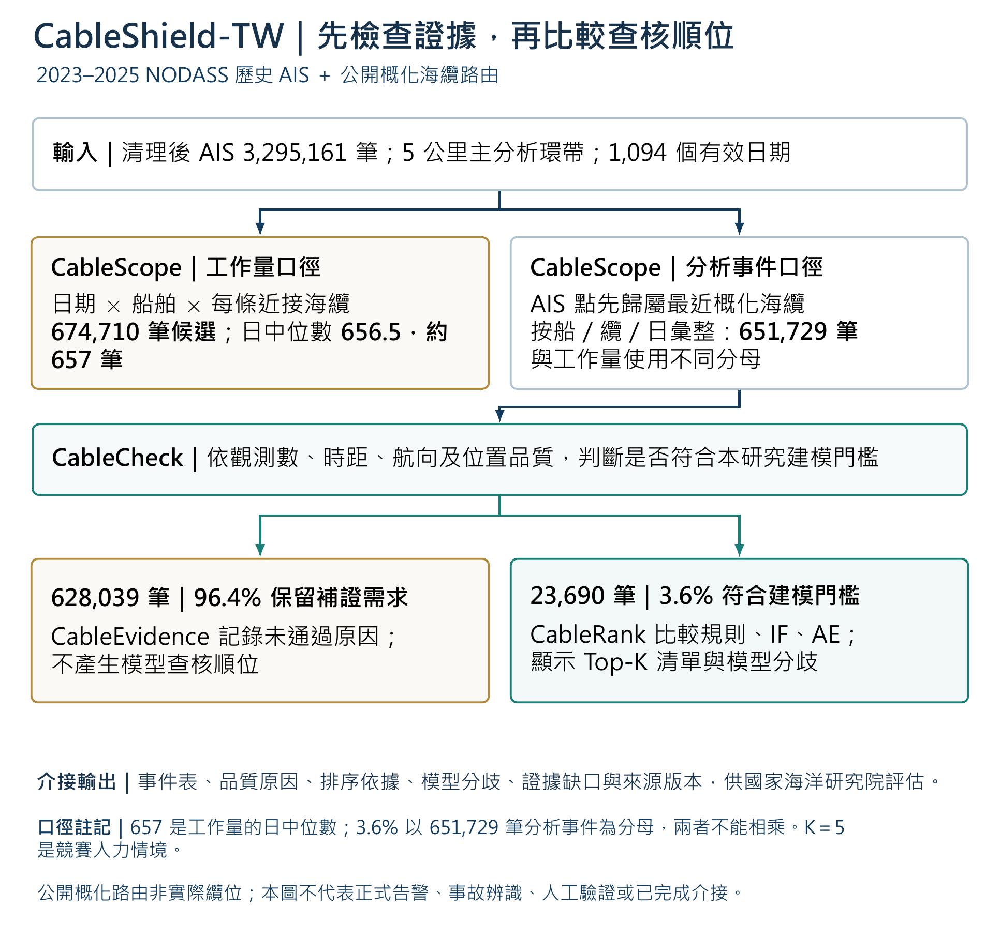

HISTORICAL AIS · EVIDENCE READINESS
大量近纜候選，先查哪一件？
臺灣周邊海域WGS84 / EPSG:3857
內政部 200 米海底地形 · WMS 快照
N
游標經緯度 · WGS84
歷史觀測船位逾 3 小時最後觀測觀測連線（非連續航跡）
不插值船位 · 缺訊不連線 · 海纜為公開概化路線
EVIDENCE READINESS · v0.9
先判斷資料可判性，再形成查核優先清單。
CableScope分別建立候選工作量與最近海纜分析事件；CableCheck依本研究門檻判斷建模資格。符合條件者由CableRank比較規則與模型順位；資料不足者由CableEvidence保留補證原因。CableTrack航跡預測為獨立研究線。K=5僅為競賽人力情境。

實線：本屆離線研究流程院方介接：待評估口徑邊界：657 是候選工作量的日中位數；3.6% 是最近海纜分析事件的建模資格率；K 是競賽查核預算，三者不能直接換算。
候選超過深查量能嗎？
CableScope 工作量盤點的典型一日為 656.5 筆船舶－海纜－日候選，約 657 筆。
資料足以解讀嗎？
CableCheck 原門檻下有 23,690 筆（3.6%）符合模型納入條件；但 547,490 筆（84.0%）5公里事件只有單點。九組門檻敏感度詳見「模型研究」。
為何先查這些？
透明規則、多模型訊號與分歧形成順位；證據卡同列支持、反證、缺口與下一步。
最後由誰負責？
AI 整理候選與證據；接收機關依既有權責查核、定性與處置。